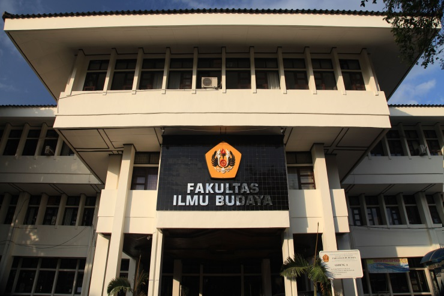
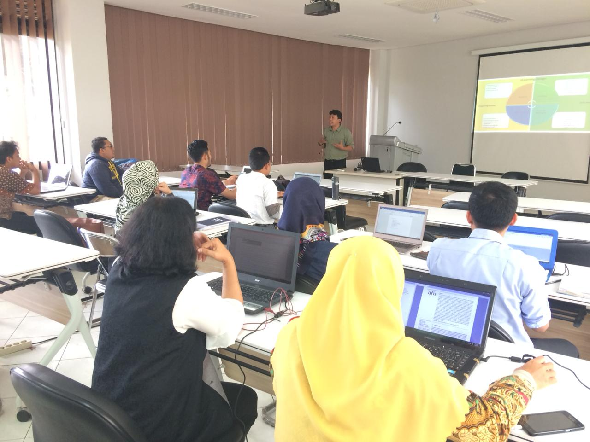

Laboratorium (lab) adalah tempat riset ilmiah, eksperimen, pengukuran ataupun pelatihan ilmiah dilakukan. Laboratorium biasanya dibuat untuk memungkinkan dilakukannya kegiatan-kegiatan tersebut secara terkendali. Laboratorium bisa merupakan suatu ruangan tertutup, kamar atau ruangan terbuka seperti kebun dan lain-lain. Kata Laboratorium berasal dari bahasa Latin yang berarti “tempat bekerja”, yaitu “tempat bekerja” khusus untuk keperluan penelitian ilmiah. Laboratorium ditunjang oleh adanya seperangkat alat-alat serta infrastruktur laboratorium yang lengkap (ada fasilitas air, listrik, gas dan sebagainya). Aktivitas yang dilakukan di laboratorium tidak selalu menggunakan alat-alat laboratorium yang umumnya tersedia, akan tetapi dapat melalui suatu pemanfaatan alat-alat sederhana. Laboratorium ilmiah dapat ditemukan sebagai ruang penelitian dan pembelajaran di sekolah dan universitas, industri, pemerintah, atau fasilitas militer, dan bahkan di atas kapal dan pesawat ruang angkasa.

Artikel Populer
- Lab. Ilmu Kelautan
- Lab. Penangkapan Perikanan
- Lab. Biokeologi & Konservasi Sumberdaya Perairan
.........................................
.........................................
.........................................
Universitas Padjadjaran
Selamat Datang

